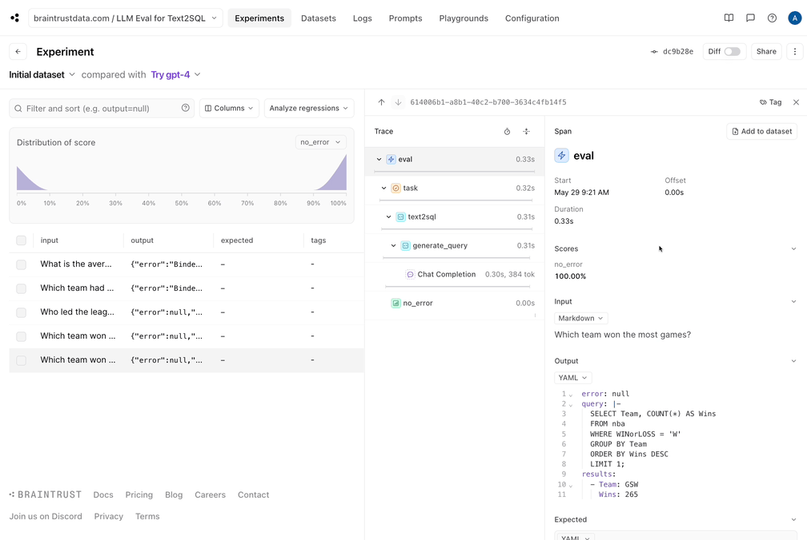
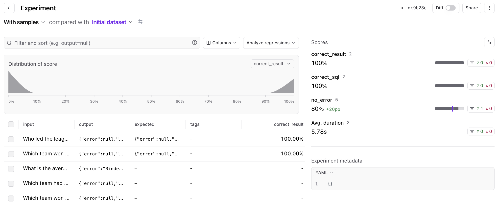
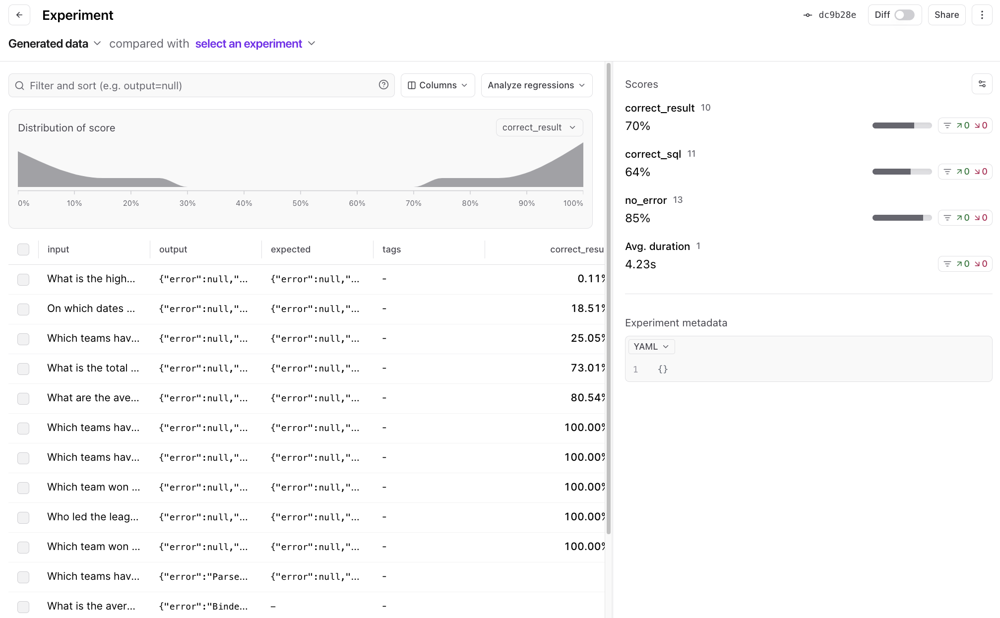
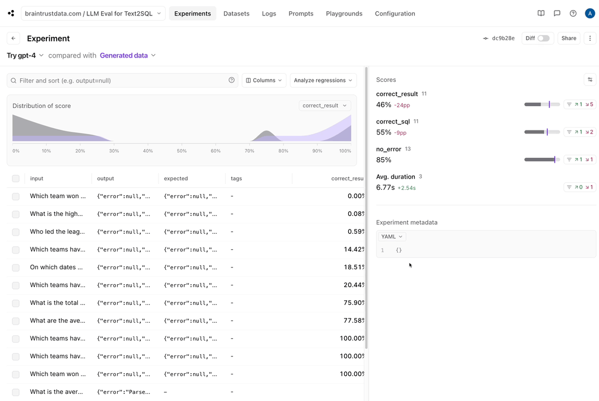

Conference Talk 2: LLM Eval For Text2SQL
- Mastering LLMs Course Notes: My notes from the course Mastering LLMs: A Conference For Developers & Data Scientists by Hamel Husain and Dan Becker.
- Importance of LLM Evaluation
- Building Effective Evaluations
- LLM Eval For Text2SQL Notebook
- Q&A Session
Importance of LLM Evaluation
- Goals of Evaluation:
- Determine if the system effectively solves the problem.
- Quickly identify improvements or regressions caused by changes.
- Analyze good and bad examples to understand model behavior.
- Identify and address regressions, avoiding a “whack-a-mole” scenario.
- Systematically improve the overall system quality.
Building Effective Evaluations
Three Core Components:
- Data:
- Start by hardcoding data representing various scenarios.
- Advanced methods like data generation and log sourcing can be incorporated later.
- Task Function:
- A function transforming input into output.
- Can be simple (single LLM call) or complex (multi-agent system).
- Example: A function converting natural language questions to SQL queries.
- Scoring Functions:
- Evaluate the quality of the output.
- Options include:
- Handwritten heuristic functions.
- LLM-based comparisons between output and expected values.
- Human evaluation and feedback.
- Data:
- NoteSimple Example:
from braintrust import Eval from autoevals import Factuality Eval( "Say Hi Bot", # Replace with your project name data=lambda: [ { "input": "David", "expected": "Hi David", }, ], # Replace with your eval dataset task=lambda input: "Hi " + input, # Replace with your LLM call scores=[Factuality], ) Iterative Improvement:
- If an evaluation reveals issues, focus on improving one of the three components:
- Data: Handwrite cases, generate cases, or obtain data from users.
- Task Function: Optimize prompts or refine the workflow of LLM calls.
- Scoring Functions: Improve heuristics, leverage LLM-based scoring, or integrate human evaluation.
- If an evaluation reveals issues, focus on improving one of the three components:
LLM Eval For Text2SQL Notebook
- Notebook: LLM Eval For Text2SQL
- Dataset: suzyanil/nba-data
- Tools:
- DuckDB: Expressive SQL tool for running queries within the notebook.
- Hugging Face Datasets: Provides easy access to the NBA dataset.
- OpenAI API: Used for accessing GPT-4 and GPT-4o models.
- BrainTrust: LLM evaluation platform for managing experiments, data, and results.
Downloading the data
- Data: NBA dataset from Hugging Face (2014-2018 seasons, one row per game).
import duckdb
from datasets import load_dataset
data = load_dataset("suzyanil/nba-data")["train"]
conn = duckdb.connect(database=":memory:", read_only=False)
conn.register("nba", data.to_pandas())
conn.query("SELECT * FROM nba LIMIT 5").to_df()| Unnamed: 0 | Team | Game | Date | Home | Opponent | WINorLOSS | TeamPoints | OpponentPoints | FieldGoals | FieldGoalsAttempted | FieldGoals. | X3PointShots | X3PointShotsAttempted | X3PointShots. | FreeThrows | FreeThrowsAttempted | FreeThrows. | OffRebounds | TotalRebounds | Assists | Steals | Blocks | Turnovers | TotalFouls | Opp.FieldGoals | Opp.FieldGoalsAttempted | Opp.FieldGoals. | Opp.3PointShots | Opp.3PointShotsAttempted | Opp.3PointShots. | Opp.FreeThrows | Opp.FreeThrowsAttempted | Opp.FreeThrows. | Opp.OffRebounds | Opp.TotalRebounds | Opp.Assists | Opp.Steals | Opp.Blocks | Opp.Turnovers | Opp.TotalFouls | |
|---|---|---|---|---|---|---|---|---|---|---|---|---|---|---|---|---|---|---|---|---|---|---|---|---|---|---|---|---|---|---|---|---|---|---|---|---|---|---|---|---|---|
| 0 | 1 | ATL | 1 | 10/29/14 | Away | TOR | L | 102 | 109 | 40 | 80 | 0.500 | 13 | 22 | 0.591 | 9 | 17 | 0.529 | 10 | 42 | 26 | 6 | 8 | 17 | 24 | 37 | 90 | 0.411 | 8 | 26 | 0.308 | 27 | 33 | 0.818 | 16 | 48 | 26 | 13 | 9 | 9 | 22 |
| 1 | 2 | ATL | 2 | 11/1/14 | Home | IND | W | 102 | 92 | 35 | 69 | 0.507 | 7 | 20 | 0.350 | 25 | 33 | 0.758 | 3 | 37 | 26 | 10 | 6 | 12 | 20 | 31 | 81 | 0.383 | 12 | 32 | 0.375 | 18 | 21 | 0.857 | 11 | 44 | 25 | 5 | 5 | 18 | 26 |
| 2 | 3 | ATL | 3 | 11/5/14 | Away | SAS | L | 92 | 94 | 38 | 92 | 0.413 | 8 | 25 | 0.320 | 8 | 11 | 0.727 | 10 | 37 | 26 | 14 | 5 | 13 | 25 | 31 | 69 | 0.449 | 5 | 17 | 0.294 | 27 | 38 | 0.711 | 11 | 50 | 25 | 7 | 9 | 19 | 15 |
| 3 | 4 | ATL | 4 | 11/7/14 | Away | CHO | L | 119 | 122 | 43 | 93 | 0.462 | 13 | 33 | 0.394 | 20 | 26 | 0.769 | 7 | 38 | 28 | 8 | 3 | 19 | 33 | 48 | 97 | 0.495 | 6 | 21 | 0.286 | 20 | 27 | 0.741 | 11 | 51 | 31 | 6 | 7 | 19 | 30 |
| 4 | 5 | ATL | 5 | 11/8/14 | Home | NYK | W | 103 | 96 | 33 | 81 | 0.407 | 9 | 22 | 0.409 | 28 | 36 | 0.778 | 12 | 41 | 18 | 10 | 5 | 8 | 17 | 40 | 84 | 0.476 | 8 | 21 | 0.381 | 8 | 11 | 0.727 | 13 | 44 | 26 | 2 | 6 | 15 | 29 |
Prototyping Text2SQL
- Simple Approach: Directly use the OpenAI API client for interacting with the LLM.
- Prompt: A basic prompt instructs the model to write a SQL query based on the provided context.
- Initial Test: The prototype successfully generates a SQL query to find the team with the most wins, demonstrating basic functionality.
import os
from textwrap import dedent
import braintrust
import openai
client = braintrust.wrap_openai(
openai.AsyncClient(
api_key=os.environ["OPENAI_API_KEY"],
base_url="https://braintrustproxy.com/v1", # This is optional and allows us to cache responses
)
)
columns = conn.query("DESCRIBE nba").to_df().to_dict(orient="records")
TASK_MODEL = "gpt-4o"
@braintrust.traced
async def generate_query(input):
response = await client.chat.completions.create(
model=TASK_MODEL,
temperature=0,
messages=[
{
"role": "system",
"content": dedent(f"""\
You are a SQL expert, and you are given a single table named nba with the following columns:
{", ".join(column["column_name"] + ": " + column["column_type"] for column in columns)}
Write a SQL query corresponding to the user's request. Return just the query text, with no
formatting (backticks, markdown, etc.).
"""),
},
{
"role": "user",
"content": input,
},
],
)
return response.choices[0].message.content
query = await generate_query("Who won the most games?")
print(query)SELECT Team, COUNT(*) AS Wins
FROM nba
WHERE WINorLOSS = 'W'
GROUP BY Team
ORDER BY Wins DESC
LIMIT 1;def execute_query(query):
return conn.query(query).fetchdf().to_dict(orient="records")
execute_query(query)[{'Team': 'GSW', 'Wins': 265}]Initial evals
- Goal: Evaluate the model’s ability to generate valid SQL queries, not necessarily correct answers.
- Dataset: Five manually crafted questions related to the NBA dataset.
- Task Function:
- Takes a question as input.
- Generates a SQL query using the LLM.
- Executes the query using DuckDB.
- Returns the query and result, handling potential errors.
- Scoring Function:
- Simple binary scoring: “good” if the query executes without errors, “bad” otherwise.
- Initial Results:
- Three out of five queries execute successfully.
- BrainTrust UI helps visualize results and debug errors.
- Correct queries and their results are saved as “golden data” for future reference.
Creating an initial dataset
questions = [
"Which team won the most games?",
"Which team won the most games in 2015?",
"Who led the league in 3 point shots?",
"Which team had the biggest difference in records across two consecutive years?",
"What is the average number of free throws per year?",
]Task function
@braintrust.traced
async def text2sql(question):
query = await generate_query(question)
results = None
error = None
try:
results = execute_query(query)
except duckdb.Error as e:
error = str(e)
return {
"query": query,
"results": results,
"error": error,
}Scores
async def no_error(output):
return output["error"] is NoneEval
from braintrust import Eval
PROJECT_NAME = "LLM Eval for Text2SQL"
await Eval(
PROJECT_NAME,
experiment_name="Initial dataset",
data=[{"input": q} for q in questions],
task=text2sql,
scores=[no_error],
)Experiment Initial dataset is running at https://www.braintrust.dev/app/Christian%20J.%20Mills%20Consulting/p/LLM%20Eval%20for%20Text2SQL/experiments/Initial%20dataset
LLM Eval for Text2SQL [experiment_name=Initial dataset] (data): 5it [00:00, 53362.65it/s]
LLM Eval for Text2SQL [experiment_name=Initial dataset] (tasks): 0%| | 0/5 [00:00<?, ?it/s]
=========================SUMMARY=========================
60.00% 'no_error' score
See results for Initial dataset at https://www.braintrust.dev/app/Christian%20J.%20Mills%20Consulting/p/LLM%20Eval%20for%20Text2SQL/experiments/Initial%20dataset
EvalResultWithSummary(summary="...", results=[...])Results
| id | _xact_id | input | output | expected | tags | scores | duration | estimated_cost | metadata | |
|---|---|---|---|---|---|---|---|---|---|---|
| 0 | ad2710ff-4c62-486b-abf4-f7266f37e5d2 | 1000193294528916736 | What is the average number of free throws per year? | {‘error’: ‘Binder Error: Could not choose a best candidate function for the function call “strftime(STRING_LITERAL, VARCHAR)”. In order to select one, please add explicit type casts. Candidate functions: strftime(TIMESTAMP, VARCHAR) -> VARCHAR strftime(TIMESTAMP WITH TIME ZONE, VARCHAR) -> VARCHAR strftime(DATE, VARCHAR) -> VARCHAR’, ‘query’: ‘SELECT strftime(’%Y’, Date) AS Year, AVG(FreeThrows) AS AverageFreeThrows FROM nba GROUP BY Year;‘, ’results’: None} | NaN | NaN | {‘no_error’: 0} | 1.728403 | 0.002320 | {} |
| 1 | 5ba5d8af-82d6-4fba-a66e-9ec5ebaeb578 | 1000193294528916736 | Which team had the biggest difference in records across two consecutive years? | {‘error’: ‘Binder Error: No function matches the given name and argument types ’year(VARCHAR)’. You might need to add explicit type casts. Candidate functions: year(DATE) -> BIGINT year(TIMESTAMP) -> BIGINT year(INTERVAL) -> BIGINT year(TIMESTAMP WITH TIME ZONE) -> BIGINT ‘, ’query’: ‘SELECT Team, ABS(SUM(CASE WHEN WINorLOSS = ’W’ THEN 1 ELSE 0 END) - LAG(SUM(CASE WHEN WINorLOSS = ‘W’ THEN 1 ELSE 0 END)) OVER (PARTITION BY Team ORDER BY Date)) AS WinDifference FROM nba GROUP BY Team, YEAR(Date) ORDER BY WinDifference DESC LIMIT 1;‘, ’results’: None} | NaN | NaN | {‘no_error’: 0} | 1.881156 | 0.003005 | {} |
| 2 | 99056cb3-a13d-4fd3-892f-b0e3fbc1dfb5 | 1000193294529047808 | Who led the league in 3 point shots? | {‘error’: None, ‘query’: ‘SELECT Team, SUM(X3PointShots) AS Total3PointShots FROM nba GROUP BY Team ORDER BY Total3PointShots DESC LIMIT 1;’, ‘results’: [{‘Team’: ‘HOU’, ‘Total3PointShots’: 4248}]} | NaN | NaN | {‘no_error’: 1} | 3.824243 | 0.002285 | {} |
| 3 | f82fc67a-8594-41bd-9869-74cd7894076b | 1000193294528916736 | Which team won the most games in 2015? | {‘error’: None, ‘query’: ’SELECT Team, COUNT(*) AS Wins FROM nba WHERE WINorLOSS = ‘W’ AND Date LIKE ‘2015%’ GROUP BY Team ORDER BY Wins DESC LIMIT 1;‘, ’results’: []} | NaN | NaN | {‘no_error’: 1} | 1.992921 | 0.002365 | {} |
| 4 | b9fea522-d53d-4b63-958b-12c9dac59a5a | 1000193294529047808 | Which team won the most games? | {‘error’: None, ‘query’: ’SELECT Team, COUNT(*) AS Wins FROM nba WHERE WINorLOSS = ‘W’ GROUP BY Team ORDER BY Wins DESC LIMIT 1;‘, ’results’: [{‘Team’: ‘GSW’, ‘Wins’: 265}]} | NaN | NaN | {‘no_error’: 1} | 4.303131 | 0.002240 | {} |
Saving Good Data

Updating the eval
- Leveraging Golden Data:
- Load golden data from BrainTrust.
- Use golden data to compare generated queries with expected answers.
- Improved Prompt:
- Include a sample row from the dataset in the prompt to provide context on data format.
- Enhanced Scoring Functions:
- Updated Results (During Talk):
- No regression on previously correct queries.
- Had 1 improvement and 1 regression when testing locally
- Improvement in generating valid SQL queries.
- Analysis of discrepancies between generated and expected answers reveals areas for improvement.
- No regression on previously correct queries.
from braintrust import init_dataset
def load_data():
golden_data = init_dataset(PROJECT_NAME, "Golden data")
golden_questions = set(d["input"] for d in golden_data)
return list(golden_data) + [{"input": q} for q in questions if q not in golden_questions]
pd.DataFrame(load_data())| id | _xact_id | created | project_id | dataset_id | input | expected | metadata | tags | span_id | root_span_id | |
|---|---|---|---|---|---|---|---|---|---|---|---|
| 0 | 09e520a6-bb32-4110-9b80-e127771a66bd | 1000193294889891926 | 2024-06-30T00:02:42.914Z | 05d79acf-0ae3-4953-bc2a-b4ccc803dcfa | 20dcbf52-2109-40c4-a941-1f2f792d09e0 | Who led the league in 3 point shots? | {‘error’: None, ‘query’: ‘SELECT Team, SUM(X3PointShots) AS Total3PointShots FROM nba GROUP BY Team ORDER BY Total3PointShots DESC LIMIT 1;’, ‘results’: [{‘Team’: ‘HOU’, ‘Total3PointShots’: 4248}]} | {} | [] | 09e520a6-bb32-4110-9b80-e127771a66bd | 09e520a6-bb32-4110-9b80-e127771a66bd |
| 1 | aa079536-bebd-402a-9a98-64c9003f7a22 | 1000193294890547290 | 2024-06-30T00:02:53.720Z | 05d79acf-0ae3-4953-bc2a-b4ccc803dcfa | 20dcbf52-2109-40c4-a941-1f2f792d09e0 | Which team won the most games? | {‘error’: None, ‘query’: ’SELECT Team, COUNT(*) AS Wins FROM nba WHERE WINorLOSS = ‘W’ GROUP BY Team ORDER BY Wins DESC LIMIT 1;‘, ’results’: [{‘Team’: ‘GSW’, ‘Wins’: 265}]} | {} | [] | aa079536-bebd-402a-9a98-64c9003f7a22 | aa079536-bebd-402a-9a98-64c9003f7a22 |
| 2 | eca397d3-e2bb-46c3-8d84-3772506d0a11 | 1000193294931441802 | 2024-06-30T00:13:17.809Z | 05d79acf-0ae3-4953-bc2a-b4ccc803dcfa | 20dcbf52-2109-40c4-a941-1f2f792d09e0 | Which team won the most games in 2015? |
{‘error’: ’Parser Error: syntax error at or near “"', 'query': 'sql SELECT Team, COUNT(*) AS Wins FROM nba WHERE WINorLOSS = ‘W’ AND Date LIKE ‘%/15’ GROUP BY Team ORDER BY Wins DESC LIMIT 1; ```‘, ’results’: None}
|
{} | [] | eca397d3-e2bb-46c3-8d84-3772506d0a11 | eca397d3-e2bb-46c3-8d84-3772506d0a11 |
| 3 | NaN | NaN | NaN | NaN | NaN | Which team had the biggest difference in records across two consecutive years? | NaN | NaN | NaN | NaN | NaN |
| 4 | NaN | NaN | NaN | NaN | NaN | What is the average number of free throws per year? | NaN | NaN | NaN | NaN | NaN |
samples = conn.query("SELECT * FROM nba LIMIT 1").to_df().to_dict(orient="records")[0]
@braintrust.traced
async def generate_query(input):
response = await client.chat.completions.create(
model=TASK_MODEL,
temperature=0,
messages=[
{
"role": "system",
"content": dedent(f"""\
You are a SQL expert, and you are given a single table named nba with the following columns:
Column | Type | Example
-------|------|--------
{"\n".join(f"{column['column_name']} | {column['column_type']} | {samples[column['column_name']]}" for column in columns)}
Write a DuckDB SQL query corresponding to the user's request. Return just the query text, with no
formatting (backticks, markdown, etc.).
"""),
},
{
"role": "user",
"content": input,
},
],
)
return response.choices[0].message.content
print(await generate_query("Which team won the most games in 2015?"))```sql
SELECT Team, COUNT(*) AS Wins
FROM nba
WHERE WINorLOSS = 'W' AND Date LIKE '%/15'
GROUP BY Team
ORDER BY Wins DESC
LIMIT 1;
```from autoevals import JSONDiff, Sql
def extract_values(results):
return [list(result.values()) for result in results]
def correct_result(output, expected):
if expected is None or expected.get("results") is None or output.get("results") is None:
return None
return JSONDiff()(output=extract_values(output["results"]), expected=extract_values(expected["results"])).score
def correct_sql(input, output, expected):
if expected is None or expected.get("query") is None or output.get("query") is None:
return None
return Sql()(input=input, output=output["query"], expected=expected["query"]).scoreawait Eval(
PROJECT_NAME,
experiment_name="With samples",
data=load_data,
task=text2sql,
scores=[no_error, correct_result, correct_sql],
)Experiment With samples is running at https://www.braintrust.dev/app/Christian%20J.%20Mills%20Consulting/p/LLM%20Eval%20for%20Text2SQL/experiments/With%20samples
LLM Eval for Text2SQL [experiment_name=With samples] (data): 5it [00:00, 12905.55it/s]
LLM Eval for Text2SQL [experiment_name=With samples] (tasks): 0%| | 0/5 [00:00<?, ?it/s]
=========================SUMMARY=========================
With samples compared to Initial dataset:
60.00% (-) 'no_error' score (1 improvements, 1 regressions)
100.00% 'correct_result' score
100.00% 'correct_sql' score
See results for With samples at https://www.braintrust.dev/app/Christian%20J.%20Mills%20Consulting/p/LLM%20Eval%20for%20Text2SQL/experiments/With%20samples
EvalResultWithSummary(summary="...", results=[...])Results
| id | _xact_id | input | output | expected | tags | scores | duration | estimated_cost | metadata | |
|---|---|---|---|---|---|---|---|---|---|---|
| 0 | 9d438233-8755-474e-90c9-39eaeab62639 | 1000193294893627520 | Which team won the most games? | {‘error’: None, ‘query’: ’SELECT Team, COUNT(*) AS Wins FROM nba WHERE WINorLOSS = ‘W’ GROUP BY Team ORDER BY Wins DESC LIMIT 1;‘, ’results’: [{‘Team’: ‘GSW’, ‘Wins’: 265}]} | {‘error’: None, ‘query’: ’SELECT Team, COUNT(*) AS Wins FROM nba WHERE WINorLOSS = ‘W’ GROUP BY Team ORDER BY Wins DESC LIMIT 1;‘, ’results’: [{‘Team’: ‘GSW’, ‘Wins’: 265}]} | [] | {‘correct_result’: 1, ‘correct_sql’: 1, ‘no_error’: 1} | 4.974092 | 0.003600 | {} |
| 1 | 1293e7ca-7800-4406-ba60-941adaa2f636 | 1000193294893627520 | Who led the league in 3 point shots? | {‘error’: None, ‘query’: ‘SELECT Team, SUM(X3PointShots) AS Total3PointShots FROM nba GROUP BY Team ORDER BY Total3PointShots DESC LIMIT 1;’, ‘results’: [{‘Team’: ‘HOU’, ‘Total3PointShots’: 4248}]} | {‘error’: None, ‘query’: ‘SELECT Team, SUM(X3PointShots) AS Total3PointShots FROM nba GROUP BY Team ORDER BY Total3PointShots DESC LIMIT 1;’, ‘results’: [{‘Team’: ‘HOU’, ‘Total3PointShots’: 4248}]} | [] | {‘correct_result’: 1, ‘correct_sql’: 1, ‘no_error’: 1} | 5.561691 | 0.003559 | {} |
| 2 | a9954383-301c-4303-b867-2c45d841593e | 1000193294893365376 | What is the average number of free throws per year? | {‘error’: ‘Binder Error: Could not choose a best candidate function for the function call “strftime(STRING_LITERAL, VARCHAR)”. In order to select one, please add explicit type casts. Candidate functions: strftime(TIMESTAMP, VARCHAR) -> VARCHAR strftime(TIMESTAMP WITH TIME ZONE, VARCHAR) -> VARCHAR strftime(DATE, VARCHAR) -> VARCHAR’, ‘query’: ‘SELECT strftime(’%Y’, Date) AS Year, AVG(FreeThrows) AS AvgFreeThrows FROM nba GROUP BY Year;‘, ’results’: None} | None | None | {‘correct_result’: None, ‘correct_sql’: None, ‘no_error’: 0} | 1.647409 | 0.002990 | {} |
| 3 | eca397d3-e2bb-46c3-8d84-3772506d0a11 | 1000193294893299840 | Which team won the most games in 2015? |
{‘error’: ’Parser Error: syntax error at or near “"', 'query': 'sql SELECT Team, COUNT(*) AS Wins FROM nba WHERE WINorLOSS = ‘W’ AND Date LIKE ‘%/15’ GROUP BY Team ORDER BY Wins DESC LIMIT 1; ```‘, ’results’: None}
|
None | None | {‘correct_result’: None, ‘correct_sql’: None, ‘no_error’: 0} | 0.235527 | 0.003215 | {} |
| 4 | eab4f712-2f79-4f0c-8e56-c037a83579ea | 1000193294893430912 | Which team had the biggest difference in records across two consecutive years? | {‘error’: None, ‘query’: ‘SELECT Team, ABS(SUM(CASE WHEN Date LIKE ’10/%’ THEN (CASE WHEN WINorLOSS = ‘W’ THEN 1 ELSE -1 END) ELSE 0 END) - SUM(CASE WHEN Date LIKE ‘11/%’ THEN (CASE WHEN WINorLOSS = ‘W’ THEN 1 ELSE -1 END) ELSE 0 END)) AS RecordDifference FROM nba GROUP BY Team ORDER BY RecordDifference DESC LIMIT 1;‘, ’results’: [{‘Team’: ‘GSW’, ‘RecordDifference’: 41}]} | None | None | {‘correct_result’: None, ‘correct_sql’: None, ‘no_error’: 1} | 2.400165 | 0.004035 | {} |

Generating more data
- Goal: Expand the evaluation dataset beyond manually crafted questions.
- Method: Use the LLM itself to generate SQL queries and corresponding questions.
- Process:
- Use function calling to structure the LLM’s output (list of questions with SQL and natural language versions).
- Provide the database schema as context.
- Execute generated queries to obtain expected results.
- Add successfully executed queries and their data to the evaluation dataset.
- Benefits:
- Automates data generation, increasing coverage.
- Creates a diverse set of evaluation examples.
import json
from pydantic import BaseModel
class Question(BaseModel):
sql: str
question: str
class Questions(BaseModel):
questions: list[Question]
logger = braintrust.init_logger("question generator")
response = await client.chat.completions.create(
model="gpt-4o",
temperature=0,
messages=[
{
"role": "user",
"content": dedent(f"""\
You are a SQL expert, and you are given a single table named nba with the following columns:
Column | Type | Example
-------|------|--------
{"\n".join(f"{column['column_name']} | {column['column_type']} | {samples[column['column_name']]}" for column in columns)}
Generate SQL queries that would be interesting to ask about this table. Return the SQL query as a string, as well as the
question that the query answers."""),
}
],
tools=[
{
"type": "function",
"function": {
"name": "generate_questions",
"description": "Generate SQL queries that would be interesting to ask about this table.",
"parameters": Questions.model_json_schema(),
},
}
],
tool_choice={"type": "function", "function": {"name": "generate_questions"}},
)
generated_questions = json.loads(response.choices[0].message.tool_calls[0].function.arguments)["questions"]
pd.DataFrame(generated_questions)| sql | question | |
|---|---|---|
| 0 | SELECT Team, COUNT(*) as Wins FROM nba WHERE WINorLOSS = ‘W’ GROUP BY Team ORDER BY Wins DESC; | Which team has the most wins? |
| 1 | SELECT Team, AVG(TeamPoints) as AvgPoints FROM nba GROUP BY Team ORDER BY AvgPoints DESC; | Which team has the highest average points per game? |
| 2 | SELECT Team, AVG(FieldGoals.) as AvgFieldGoalPercentage FROM nba GROUP BY Team ORDER BY AvgFieldGoalPercentage DESC; | Which team has the highest average field goal percentage? |
| 3 | SELECT Team, AVG(X3PointShots.) as Avg3PointPercentage FROM nba GROUP BY Team ORDER BY Avg3PointPercentage DESC; | Which team has the highest average 3-point shooting percentage? |
| 4 | SELECT Team, AVG(TotalRebounds) as AvgRebounds FROM nba GROUP BY Team ORDER BY AvgRebounds DESC; | Which team has the highest average total rebounds per game? |
| 5 | SELECT Team, AVG(Turnovers) as AvgTurnovers FROM nba GROUP BY Team ORDER BY AvgTurnovers ASC; | Which team has the lowest average turnovers per game? |
| 6 | SELECT Team, AVG(Assists) as AvgAssists FROM nba GROUP BY Team ORDER BY AvgAssists DESC; | Which team has the highest average assists per game? |
| 7 | SELECT Team, AVG(Steals) as AvgSteals FROM nba GROUP BY Team ORDER BY AvgSteals DESC; | Which team has the highest average steals per game? |
| 8 | SELECT Team, AVG(Blocks) as AvgBlocks FROM nba GROUP BY Team ORDER BY AvgBlocks DESC; | Which team has the highest average blocks per game? |
| 9 | SELECT Team, AVG(TotalFouls) as AvgFouls FROM nba GROUP BY Team ORDER BY AvgFouls ASC; | Which team has the lowest average fouls per game? |
generated_dataset = []
for q in generated_questions:
try:
result = execute_query(q["sql"])
generated_dataset.append(
{
"input": q["question"],
"expected": {
"results": result,
"error": None,
"query": q["sql"],
},
"metadata": {
"category": "Generated",
},
}
)
except duckdb.Error as e:
print(f"Query failed: {q['sql']}", e)
print("Skipping...")
pd.DataFrame(generated_dataset)#[0]Query failed: SELECT Team, AVG(FieldGoals.) as AvgFieldGoalPercentage FROM nba GROUP BY Team ORDER BY AvgFieldGoalPercentage DESC; Parser Error: syntax error at or near ")"
Skipping...
Query failed: SELECT Team, AVG(X3PointShots.) as Avg3PointPercentage FROM nba GROUP BY Team ORDER BY Avg3PointPercentage DESC; Parser Error: syntax error at or near ")"
Skipping...| input | expected | metadata | |
|---|---|---|---|
| 0 | Which team has the most wins? | {‘results’: [{‘Team’: ‘GSW’, ‘Wins’: 265}, {‘Team’: ‘SAS’, ‘Wins’: 230}, {‘Team’: ‘HOU’, ‘Wins’: 217}, {‘Team’: ‘TOR’, ‘Wins’: 215}, {‘Team’: ‘CLE’, ‘Wins’: 211}, {‘Team’: ‘LAC’, ‘Wins’: 202}, {‘Team’: ‘BOS’, ‘Wins’: 196}, {‘Team’: ‘OKC’, ‘Wins’: 195}, {‘Team’: ‘POR’, ‘Wins’: 185}, {‘Team’: ‘WAS’, ‘Wins’: 179}, {‘Team’: ‘UTA’, ‘Wins’: 177}, {‘Team’: ‘ATL’, ‘Wins’: 175}, {‘Team’: ‘IND’, ‘Wins’: 173}, {‘Team’: ‘MIA’, ‘Wins’: 170}, {‘Team’: ‘MEM’, ‘Wins’: 162}, {‘Team’: ‘CHI’, ‘Wins’: 160}, {‘Team’: ‘MIL’, ‘Wins’: 160}, {‘Team’: ‘NOP’, ‘Wins’: 157}, {‘Team’: ‘CHO’, ‘Wins’: 153}, {‘Team’: ‘DET’, ‘Wins’: 152}, {‘Team’: ‘DAL’, ‘Wins’: 149}, {‘Team’: ‘DEN’, ‘Wins’: 149}, {‘Team’: ‘MIN’, ‘Wins’: 123}, {‘Team’: ‘SAC’, ‘Wins’: 121}, {‘Team’: ‘ORL’, ‘Wins’: 114}, {‘Team’: ‘NYK’, ‘Wins’: 109}, {‘Team’: ‘PHI’, ‘Wins’: 108}, {‘Team’: ‘PHO’, ‘Wins’: 107}, {‘Team’: ‘BRK’, ‘Wins’: 107}, {‘Team’: ‘LAL’, ‘Wins’: 99}], ‘error’: None, ‘query’: ’SELECT Team, COUNT(*) as Wins FROM nba WHERE WINorLOSS = ‘W’ GROUP BY Team ORDER BY Wins DESC;’} | {‘category’: ‘Generated’} |
| 1 | Which team has the highest average points per game? | {‘results’: [{‘Team’: ‘GSW’, ‘AvgPoints’: 113.54878048780488}, {‘Team’: ‘HOU’, ‘AvgPoints’: 109.54268292682927}, {‘Team’: ‘LAC’, ‘AvgPoints’: 107.21951219512195}, {‘Team’: ‘CLE’, ‘AvgPoints’: 107.16463414634147}, {‘Team’: ‘OKC’, ‘AvgPoints’: 107.15548780487805}, {‘Team’: ‘TOR’, ‘AvgPoints’: 106.30182926829268}, {‘Team’: ‘DEN’, ‘AvgPoints’: 106.26829268292683}, {‘Team’: ‘POR’, ‘AvgPoints’: 105.375}, {‘Team’: ‘BOS’, ‘AvgPoints’: 104.77743902439025}, {‘Team’: ‘WAS’, ‘AvgPoints’: 104.60060975609755}, {‘Team’: ‘NOP’, ‘AvgPoints’: 104.53353658536585}, {‘Team’: ‘MIN’, ‘AvgPoints’: 103.8140243902439}, {‘Team’: ‘PHO’, ‘AvgPoints’: 103.72256097560975}, {‘Team’: ‘SAS’, ‘AvgPoints’: 103.6951219512195}, {‘Team’: ‘ATL’, ‘AvgPoints’: 102.97560975609755}, {‘Team’: ‘CHO’, ‘AvgPoints’: 102.66768292682927}, {‘Team’: ‘IND’, ‘AvgPoints’: 102.53658536585365}, {‘Team’: ‘SAC’, ‘AvgPoints’: 102.39024390243902}, {‘Team’: ‘BRK’, ‘AvgPoints’: 102.25914634146342}, {‘Team’: ‘LAL’, ‘AvgPoints’: 102.10975609756098}, {‘Team’: ‘CHI’, ‘AvgPoints’: 102.0579268292683}, {‘Team’: ‘DAL’, ‘AvgPoints’: 101.9359756097561}, {‘Team’: ‘MIL’, ‘AvgPoints’: 101.7469512195122}, {‘Team’: ‘DET’, ‘AvgPoints’: 101.39024390243902}, {‘Team’: ‘ORL’, ‘AvgPoints’: 100.5579268292683}, {‘Team’: ‘PHI’, ‘AvgPoints’: 100.40853658536585}, {‘Team’: ‘MIA’, ‘AvgPoints’: 100.32926829268293}, {‘Team’: ‘NYK’, ‘AvgPoints’: 99.76219512195122}, {‘Team’: ‘UTA’, ‘AvgPoints’: 99.41768292682927}, {‘Team’: ‘MEM’, ‘AvgPoints’: 99.3048780487805}], ‘error’: None, ‘query’: ‘SELECT Team, AVG(TeamPoints) as AvgPoints FROM nba GROUP BY Team ORDER BY AvgPoints DESC;’} | {‘category’: ‘Generated’} |
| 2 | Which team has the highest average total rebounds per game? | {‘results’: [{‘Team’: ‘OKC’, ‘AvgRebounds’: 46.954268292682926}, {‘Team’: ‘CHI’, ‘AvgRebounds’: 45.75}, {‘Team’: ‘DET’, ‘AvgRebounds’: 45.15548780487805}, {‘Team’: ‘POR’, ‘AvgRebounds’: 45.11585365853659}, {‘Team’: ‘DEN’, ‘AvgRebounds’: 45.051829268292686}, {‘Team’: ‘GSW’, ‘AvgRebounds’: 44.71341463414634}, {‘Team’: ‘PHO’, ‘AvgRebounds’: 44.26829268292683}, {‘Team’: ‘CHO’, ‘AvgRebounds’: 44.25609756097561}, {‘Team’: ‘LAL’, ‘AvgRebounds’: 44.1859756097561}, {‘Team’: ‘SAS’, ‘AvgRebounds’: 43.91158536585366}, {‘Team’: ‘BOS’, ‘AvgRebounds’: 43.795731707317074}, {‘Team’: ‘HOU’, ‘AvgRebounds’: 43.64329268292683}, {‘Team’: ‘PHI’, ‘AvgRebounds’: 43.59146341463415}, {‘Team’: ‘NOP’, ‘AvgRebounds’: 43.52439024390244}, {‘Team’: ‘NYK’, ‘AvgRebounds’: 43.49085365853659}, {‘Team’: ‘UTA’, ‘AvgRebounds’: 43.420731707317074}, {‘Team’: ‘IND’, ‘AvgRebounds’: 43.35670731707317}, {‘Team’: ‘CLE’, ‘AvgRebounds’: 43.33841463414634}, {‘Team’: ‘BRK’, ‘AvgRebounds’: 43.271341463414636}, {‘Team’: ‘WAS’, ‘AvgRebounds’: 43.1219512195122}, {‘Team’: ‘TOR’, ‘AvgRebounds’: 43.051829268292686}, {‘Team’: ‘LAC’, ‘AvgRebounds’: 42.890243902439025}, {‘Team’: ‘SAC’, ‘AvgRebounds’: 42.60060975609756}, {‘Team’: ‘MIA’, ‘AvgRebounds’: 42.582317073170735}, {‘Team’: ‘ORL’, ‘AvgRebounds’: 42.48780487804878}, {‘Team’: ‘ATL’, ‘AvgRebounds’: 42.21646341463415}, {‘Team’: ‘MEM’, ‘AvgRebounds’: 41.8719512195122}, {‘Team’: ‘MIN’, ‘AvgRebounds’: 41.71341463414634}, {‘Team’: ‘DAL’, ‘AvgRebounds’: 41.292682926829265}, {‘Team’: ‘MIL’, ‘AvgRebounds’: 40.99390243902439}], ‘error’: None, ‘query’: ‘SELECT Team, AVG(TotalRebounds) as AvgRebounds FROM nba GROUP BY Team ORDER BY AvgRebounds DESC;’} | {‘category’: ‘Generated’} |
| 3 | Which team has the lowest average turnovers per game? | {‘results’: [{‘Team’: ‘CHO’, ‘AvgTurnovers’: 11.579268292682928}, {‘Team’: ‘DAL’, ‘AvgTurnovers’: 11.972560975609756}, {‘Team’: ‘TOR’, ‘AvgTurnovers’: 12.21951219512195}, {‘Team’: ‘DET’, ‘AvgTurnovers’: 12.432926829268293}, {‘Team’: ‘LAC’, ‘AvgTurnovers’: 12.676829268292684}, {‘Team’: ‘SAS’, ‘AvgTurnovers’: 12.893292682926829}, {‘Team’: ‘NOP’, ‘AvgTurnovers’: 13.097560975609756}, {‘Team’: ‘MEM’, ‘AvgTurnovers’: 13.128048780487806}, {‘Team’: ‘BOS’, ‘AvgTurnovers’: 13.173780487804878}, {‘Team’: ‘CHI’, ‘AvgTurnovers’: 13.195121951219512}, {‘Team’: ‘CLE’, ‘AvgTurnovers’: 13.25}, {‘Team’: ‘MIA’, ‘AvgTurnovers’: 13.341463414634147}, {‘Team’: ‘POR’, ‘AvgTurnovers’: 13.36890243902439}, {‘Team’: ‘IND’, ‘AvgTurnovers’: 13.426829268292684}, {‘Team’: ‘MIN’, ‘AvgTurnovers’: 13.448170731707316}, {‘Team’: ‘NYK’, ‘AvgTurnovers’: 13.451219512195122}, {‘Team’: ‘ORL’, ‘AvgTurnovers’: 13.676829268292684}, {‘Team’: ‘UTA’, ‘AvgTurnovers’: 13.850609756097562}, {‘Team’: ‘LAL’, ‘AvgTurnovers’: 13.875}, {‘Team’: ‘WAS’, ‘AvgTurnovers’: 13.939024390243903}, {‘Team’: ‘DEN’, ‘AvgTurnovers’: 14.195121951219512}, {‘Team’: ‘MIL’, ‘AvgTurnovers’: 14.277439024390244}, {‘Team’: ‘OKC’, ‘AvgTurnovers’: 14.390243902439025}, {‘Team’: ‘BRK’, ‘AvgTurnovers’: 14.46951219512195}, {‘Team’: ‘ATL’, ‘AvgTurnovers’: 14.551829268292684}, {‘Team’: ‘GSW’, ‘AvgTurnovers’: 14.59451219512195}, {‘Team’: ‘SAC’, ‘AvgTurnovers’: 14.615853658536585}, {‘Team’: ‘HOU’, ‘AvgTurnovers’: 14.713414634146341}, {‘Team’: ‘PHO’, ‘AvgTurnovers’: 15.268292682926829}, {‘Team’: ‘PHI’, ‘AvgTurnovers’: 16.085365853658537}], ‘error’: None, ‘query’: ‘SELECT Team, AVG(Turnovers) as AvgTurnovers FROM nba GROUP BY Team ORDER BY AvgTurnovers ASC;’} | {‘category’: ‘Generated’} |
| 4 | Which team has the highest average assists per game? | {‘results’: [{‘Team’: ‘GSW’, ‘AvgAssists’: 29.00609756097561}, {‘Team’: ‘ATL’, ‘AvgAssists’: 24.679878048780488}, {‘Team’: ‘WAS’, ‘AvgAssists’: 24.375}, {‘Team’: ‘BOS’, ‘AvgAssists’: 24.088414634146343}, {‘Team’: ‘SAS’, ‘AvgAssists’: 23.878048780487806}, {‘Team’: ‘DEN’, ‘AvgAssists’: 23.722560975609756}, {‘Team’: ‘MIL’, ‘AvgAssists’: 23.524390243902438}, {‘Team’: ‘NOP’, ‘AvgAssists’: 23.4390243902439}, {‘Team’: ‘PHI’, ‘AvgAssists’: 23.225609756097562}, {‘Team’: ‘LAC’, ‘AvgAssists’: 23.121951219512194}, {‘Team’: ‘MIN’, ‘AvgAssists’: 22.829268292682926}, {‘Team’: ‘HOU’, ‘AvgAssists’: 22.798780487804876}, {‘Team’: ‘CLE’, ‘AvgAssists’: 22.710365853658537}, {‘Team’: ‘CHI’, ‘AvgAssists’: 22.63719512195122}, {‘Team’: ‘ORL’, ‘AvgAssists’: 22.45731707317073}, {‘Team’: ‘SAC’, ‘AvgAssists’: 22.222560975609756}, {‘Team’: ‘BRK’, ‘AvgAssists’: 22.08231707317073}, {‘Team’: ‘DAL’, ‘AvgAssists’: 22.01829268292683}, {‘Team’: ‘IND’, ‘AvgAssists’: 21.83231707317073}, {‘Team’: ‘NYK’, ‘AvgAssists’: 21.725609756097562}, {‘Team’: ‘CHO’, ‘AvgAssists’: 21.625}, {‘Team’: ‘OKC’, ‘AvgAssists’: 21.448170731707318}, {‘Team’: ‘MEM’, ‘AvgAssists’: 21.295731707317074}, {‘Team’: ‘DET’, ‘AvgAssists’: 21.234756097560975}, {‘Team’: ‘MIA’, ‘AvgAssists’: 21.15548780487805}, {‘Team’: ‘POR’, ‘AvgAssists’: 20.972560975609756}, {‘Team’: ‘LAL’, ‘AvgAssists’: 20.908536585365855}, {‘Team’: ‘TOR’, ‘AvgAssists’: 20.576219512195124}, {‘Team’: ‘PHO’, ‘AvgAssists’: 20.448170731707318}, {‘Team’: ‘UTA’, ‘AvgAssists’: 20.35670731707317}], ‘error’: None, ‘query’: ‘SELECT Team, AVG(Assists) as AvgAssists FROM nba GROUP BY Team ORDER BY AvgAssists DESC;’} | {‘category’: ‘Generated’} |
| 5 | Which team has the highest average steals per game? | {‘results’: [{‘Team’: ‘HOU’, ‘AvgSteals’: 9.045731707317072}, {‘Team’: ‘GSW’, ‘AvgSteals’: 8.817073170731707}, {‘Team’: ‘MIL’, ‘AvgSteals’: 8.685975609756097}, {‘Team’: ‘PHI’, ‘AvgSteals’: 8.667682926829269}, {‘Team’: ‘ATL’, ‘AvgSteals’: 8.539634146341463}, {‘Team’: ‘MEM’, ‘AvgSteals’: 8.201219512195122}, {‘Team’: ‘MIN’, ‘AvgSteals’: 8.13109756097561}, {‘Team’: ‘BOS’, ‘AvgSteals’: 8.070121951219512}, {‘Team’: ‘WAS’, ‘AvgSteals’: 8.070121951219512}, {‘Team’: ‘IND’, ‘AvgSteals’: 8.036585365853659}, {‘Team’: ‘SAS’, ‘AvgSteals’: 7.978658536585366}, {‘Team’: ‘OKC’, ‘AvgSteals’: 7.902439024390244}, {‘Team’: ‘LAC’, ‘AvgSteals’: 7.890243902439025}, {‘Team’: ‘PHO’, ‘AvgSteals’: 7.850609756097561}, {‘Team’: ‘TOR’, ‘AvgSteals’: 7.786585365853658}, {‘Team’: ‘SAC’, ‘AvgSteals’: 7.783536585365853}, {‘Team’: ‘ORL’, ‘AvgSteals’: 7.689024390243903}, {‘Team’: ‘UTA’, ‘AvgSteals’: 7.658536585365853}, {‘Team’: ‘NOP’, ‘AvgSteals’: 7.560975609756097}, {‘Team’: ‘LAL’, ‘AvgSteals’: 7.554878048780488}, {‘Team’: ‘DEN’, ‘AvgSteals’: 7.454268292682927}, {‘Team’: ‘DAL’, ‘AvgSteals’: 7.362804878048781}, {‘Team’: ‘MIA’, ‘AvgSteals’: 7.326219512195122}, {‘Team’: ‘DET’, ‘AvgSteals’: 7.310975609756097}, {‘Team’: ‘BRK’, ‘AvgSteals’: 7.036585365853658}, {‘Team’: ‘CHI’, ‘AvgSteals’: 6.945121951219512}, {‘Team’: ‘CLE’, ‘AvgSteals’: 6.935975609756097}, {‘Team’: ‘POR’, ‘AvgSteals’: 6.810975609756097}, {‘Team’: ‘CHO’, ‘AvgSteals’: 6.780487804878049}, {‘Team’: ‘NYK’, ‘AvgSteals’: 6.6310975609756095}], ‘error’: None, ‘query’: ‘SELECT Team, AVG(Steals) as AvgSteals FROM nba GROUP BY Team ORDER BY AvgSteals DESC;’} | {‘category’: ‘Generated’} |
| 6 | Which team has the highest average blocks per game? | {‘results’: [{‘Team’: ‘GSW’, ‘AvgBlocks’: 6.588414634146342}, {‘Team’: ‘SAS’, ‘AvgBlocks’: 5.710365853658536}, {‘Team’: ‘PHI’, ‘AvgBlocks’: 5.554878048780488}, {‘Team’: ‘MIA’, ‘AvgBlocks’: 5.515243902439025}, {‘Team’: ‘NOP’, ‘AvgBlocks’: 5.4573170731707314}, {‘Team’: ‘OKC’, ‘AvgBlocks’: 5.3689024390243905}, {‘Team’: ‘MIL’, ‘AvgBlocks’: 5.3567073170731705}, {‘Team’: ‘UTA’, ‘AvgBlocks’: 5.317073170731708}, {‘Team’: ‘NYK’, ‘AvgBlocks’: 5.2560975609756095}, {‘Team’: ‘TOR’, ‘AvgBlocks’: 5.201219512195122}, {‘Team’: ‘CHO’, ‘AvgBlocks’: 5.027439024390244}, {‘Team’: ‘CHI’, ‘AvgBlocks’: 4.963414634146342}, {‘Team’: ‘ATL’, ‘AvgBlocks’: 4.911585365853658}, {‘Team’: ‘LAC’, ‘AvgBlocks’: 4.844512195121951}, {‘Team’: ‘POR’, ‘AvgBlocks’: 4.826219512195122}, {‘Team’: ‘HOU’, ‘AvgBlocks’: 4.820121951219512}, {‘Team’: ‘ORL’, ‘AvgBlocks’: 4.655487804878049}, {‘Team’: ‘IND’, ‘AvgBlocks’: 4.6189024390243905}, {‘Team’: ‘DEN’, ‘AvgBlocks’: 4.539634146341464}, {‘Team’: ‘PHO’, ‘AvgBlocks’: 4.469512195121951}, {‘Team’: ‘BRK’, ‘AvgBlocks’: 4.4176829268292686}, {‘Team’: ‘MEM’, ‘AvgBlocks’: 4.3810975609756095}, {‘Team’: ‘MIN’, ‘AvgBlocks’: 4.317073170731708}, {‘Team’: ‘LAL’, ‘AvgBlocks’: 4.301829268292683}, {‘Team’: ‘WAS’, ‘AvgBlocks’: 4.237804878048781}, {‘Team’: ‘SAC’, ‘AvgBlocks’: 4.134146341463414}, {‘Team’: ‘BOS’, ‘AvgBlocks’: 4.134146341463414}, {‘Team’: ‘DET’, ‘AvgBlocks’: 4.0060975609756095}, {‘Team’: ‘CLE’, ‘AvgBlocks’: 3.951219512195122}, {‘Team’: ‘DAL’, ‘AvgBlocks’: 3.9451219512195124}], ‘error’: None, ‘query’: ‘SELECT Team, AVG(Blocks) as AvgBlocks FROM nba GROUP BY Team ORDER BY AvgBlocks DESC;’} | {‘category’: ‘Generated’} |
| 7 | Which team has the lowest average fouls per game? | {‘results’: [{‘Team’: ‘CHO’, ‘AvgFouls’: 17.533536585365855}, {‘Team’: ‘SAS’, ‘AvgFouls’: 18.0}, {‘Team’: ‘CHI’, ‘AvgFouls’: 18.496951219512194}, {‘Team’: ‘DET’, ‘AvgFouls’: 18.570121951219512}, {‘Team’: ‘ATL’, ‘AvgFouls’: 18.670731707317074}, {‘Team’: ‘CLE’, ‘AvgFouls’: 18.85670731707317}, {‘Team’: ‘NOP’, ‘AvgFouls’: 19.216463414634145}, {‘Team’: ‘DAL’, ‘AvgFouls’: 19.463414634146343}, {‘Team’: ‘UTA’, ‘AvgFouls’: 19.484756097560975}, {‘Team’: ‘MIN’, ‘AvgFouls’: 19.536585365853657}, {‘Team’: ‘MIA’, ‘AvgFouls’: 19.713414634146343}, {‘Team’: ‘BRK’, ‘AvgFouls’: 19.722560975609756}, {‘Team’: ‘GSW’, ‘AvgFouls’: 19.878048780487806}, {‘Team’: ‘IND’, ‘AvgFouls’: 19.88719512195122}, {‘Team’: ‘ORL’, ‘AvgFouls’: 20.057926829268293}, {‘Team’: ‘POR’, ‘AvgFouls’: 20.15548780487805}, {‘Team’: ‘SAC’, ‘AvgFouls’: 20.359756097560975}, {‘Team’: ‘DEN’, ‘AvgFouls’: 20.442073170731707}, {‘Team’: ‘NYK’, ‘AvgFouls’: 20.53048780487805}, {‘Team’: ‘LAC’, ‘AvgFouls’: 20.60670731707317}, {‘Team’: ‘TOR’, ‘AvgFouls’: 20.774390243902438}, {‘Team’: ‘HOU’, ‘AvgFouls’: 20.804878048780488}, {‘Team’: ‘BOS’, ‘AvgFouls’: 20.847560975609756}, {‘Team’: ‘LAL’, ‘AvgFouls’: 20.850609756097562}, {‘Team’: ‘OKC’, ‘AvgFouls’: 21.003048780487806}, {‘Team’: ‘WAS’, ‘AvgFouls’: 21.054878048780488}, {‘Team’: ‘MIL’, ‘AvgFouls’: 21.100609756097562}, {‘Team’: ‘MEM’, ‘AvgFouls’: 21.615853658536587}, {‘Team’: ‘PHI’, ‘AvgFouls’: 21.841463414634145}, {‘Team’: ‘PHO’, ‘AvgFouls’: 22.679878048780488}], ‘error’: None, ‘query’: ‘SELECT Team, AVG(TotalFouls) as AvgFouls FROM nba GROUP BY Team ORDER BY AvgFouls ASC;’} | {‘category’: ‘Generated’} |
def load_data():
golden_data = init_dataset(PROJECT_NAME, "Golden data")
golden_questions = set(d["input"] for d in golden_data)
return (
[{**x, "metadata": {"category": "Golden data"}} for x in golden_data]
+ [
{"input": q, "metadata": {"category": "Handwritten question"}}
for q in questions
if q not in golden_questions
]
+ [x for x in generated_dataset if x["input"] not in golden_questions]
)await Eval(
PROJECT_NAME,
experiment_name="Generated data",
data=load_data,
task=text2sql,
scores=[no_error, correct_result, correct_sql],
)Experiment Generated data is running at https://www.braintrust.dev/app/Christian%20J.%20Mills%20Consulting/p/LLM%20Eval%20for%20Text2SQL/experiments/Generated%20data
LLM Eval for Text2SQL [experiment_name=Generated data] (data): 13it [00:00, 111962.94it/s]
LLM Eval for Text2SQL [experiment_name=Generated data] (tasks): 0%| | 0/13 [00:00<?, ?it/s]
=========================SUMMARY=========================
Generated data compared to With samples:
22.50% (-) 'correct_result' score (0 improvements, 0 regressions)
84.62% (-) 'no_error' score (0 improvements, 0 regressions)
72.73% (-) 'correct_sql' score (0 improvements, 0 regressions)
See results for Generated data at https://www.braintrust.dev/app/Christian%20J.%20Mills%20Consulting/p/LLM%20Eval%20for%20Text2SQL/experiments/Generated%20data
EvalResultWithSummary(summary="...", results=[...])
Trying GPT-4
- Experiment: Replace GPT-4o with GPT-4 in the task function.
- Results (During Talk):
- Regression in performance across all metrics, including on the golden dataset.
- Nearly a total wash between the improvements and regressions when testing locally
- Analysis suggests potential issues with date syntax and prompt formatting.
- Regression in performance across all metrics, including on the golden dataset.
TASK_MODEL = "gpt-4"
await Eval(
PROJECT_NAME,
experiment_name="Try gpt-4",
data=load_data,
task=text2sql,
scores=[no_error, correct_result, correct_sql],
)Experiment Try gpt-4 is running at https://www.braintrust.dev/app/Christian%20J.%20Mills%20Consulting/p/LLM%20Eval%20for%20Text2SQL/experiments/Try%20gpt-4
LLM Eval for Text2SQL [experiment_name=Try gpt-4] (data): 13it [00:00, 162764.04it/s]
LLM Eval for Text2SQL [experiment_name=Try gpt-4] (tasks): 0%| | 0/13 [00:00<?, ?it/s]
=========================SUMMARY=========================
Try gpt-4 compared to Generated data:
12.73% (-09.77%) 'correct_result' score (1 improvements, 1 regressions)
81.82% (+09.09%) 'correct_sql' score (3 improvements, 2 regressions)
84.62% (-) 'no_error' score (1 improvements, 1 regressions)
See results for Try gpt-4 at https://www.braintrust.dev/app/Christian%20J.%20Mills%20Consulting/p/LLM%20Eval%20for%20Text2SQL/experiments/Try%20gpt-4
EvalResultWithSummary(summary="...", results=[...])Results
| id | _xact_id | input | output | expected | tags | scores | duration | estimated_cost | metadata | |
|---|---|---|---|---|---|---|---|---|---|---|
| 0 | bc0a4372-24f7-441a-8b3f-f618dd7b378f | 1000193295096986240 | Who led the league in 3 point shots? | {‘error’: None, ‘query’: ‘SELECT Team, MAX(X3PointShots) as Max_3PointShots FROM nba GROUP BY Team ORDER BY Max_3PointShots DESC LIMIT 1;’, ‘results’: [{‘Team’: ‘CLE’, ‘Max_3PointShots’: 25}]} | {‘error’: None, ‘query’: ‘SELECT Team, SUM(X3PointShots) AS Total3PointShots FROM nba GROUP BY Team ORDER BY Total3PointShots DESC LIMIT 1;’, ‘results’: [{‘Team’: ‘HOU’, ‘Total3PointShots’: 4248}]} | [] | {‘correct_result’: 0.005850690381465001, ‘correct_sql’: 0, ‘no_error’: 1} | 7.480919 | 0.018554 | {‘category’: ‘Golden data’} |
| 1 | 54c91672-cba1-4e46-a85f-b9ed90b618a1 | 1000193295097051776 | Which team has the highest average total rebounds per game? | {‘error’: None, ‘query’: ‘SELECT Team, AVG(TotalRebounds) as AverageRebounds FROM nba GROUP BY Team ORDER BY AverageRebounds DESC LIMIT 1;’, ‘results’: [{‘Team’: ‘OKC’, ‘AverageRebounds’: 46.954268292682926}]} | {‘error’: None, ‘query’: ‘SELECT Team, AVG(TotalRebounds) as AvgRebounds FROM nba GROUP BY Team ORDER BY AvgRebounds DESC;’, ‘results’: [{‘Team’: ‘OKC’, ‘AvgRebounds’: 46.954268292682926}, {‘Team’: ‘CHI’, ‘AvgRebounds’: 45.75}, {‘Team’: ‘DET’, ‘AvgRebounds’: 45.15548780487805}, {‘Team’: ‘POR’, ‘AvgRebounds’: 45.11585365853659}, {‘Team’: ‘DEN’, ‘AvgRebounds’: 45.051829268292686}, {‘Team’: ‘GSW’, ‘AvgRebounds’: 44.71341463414634}, {‘Team’: ‘PHO’, ‘AvgRebounds’: 44.26829268292683}, {‘Team’: ‘CHO’, ‘AvgRebounds’: 44.25609756097561}, {‘Team’: ‘LAL’, ‘AvgRebounds’: 44.1859756097561}, {‘Team’: ‘SAS’, ‘AvgRebounds’: 43.91158536585366}, {‘Team’: ‘BOS’, ‘AvgRebounds’: 43.795731707317074}, {‘Team’: ‘HOU’, ‘AvgRebounds’: 43.64329268292683}, {‘Team’: ‘PHI’, ‘AvgRebounds’: 43.59146341463415}, {‘Team’: ‘NOP’, ‘AvgRebounds’: 43.52439024390244}, {‘Team’: ‘NYK’, ‘AvgRebounds’: 43.49085365853659}, {‘Team’: ‘UTA’, ‘AvgRebounds’: 43.420731707317074}, {‘Team’: ‘IND’, ‘AvgRebounds’: 43.35670731707317}, {‘Team’: ‘CLE’, ‘AvgRebounds’: 43.33841463414634}, {‘Team’: ‘BRK’, ‘AvgRebounds’: 43.271341463414636}, {‘Team’: ‘WAS’, ‘AvgRebounds’: 43.1219512195122}, {‘Team’: ‘TOR’, ‘AvgRebounds’: 43.051829268292686}, {‘Team’: ‘LAC’, ‘AvgRebounds’: 42.890243902439025}, {‘Team’: ‘SAC’, ‘AvgRebounds’: 42.60060975609756}, {‘Team’: ‘MIA’, ‘AvgRebounds’: 42.582317073170735}, {‘Team’: ‘ORL’, ‘AvgRebounds’: 42.48780487804878}, {‘Team’: ‘ATL’, ‘AvgRebounds’: 42.21646341463415}, {‘Team’: ‘MEM’, ‘AvgRebounds’: 41.8719512195122}, {‘Team’: ‘MIN’, ‘AvgRebounds’: 41.71341463414634}, {‘Team’: ‘DAL’, ‘AvgRebounds’: 41.292682926829265}, {‘Team’: ‘MIL’, ‘AvgRebounds’: 40.99390243902439}]} | None | {‘correct_result’: 0.033333333333333, ‘correct_sql’: 0, ‘no_error’: 1} | 8.128142 | 0.018371 | {‘category’: ‘Generated’} |
| 2 | ef818ada-cbf7-4dab-a6c8-8bca01d340d1 | 1000193295096986240 | Which team has the lowest average fouls per game? | {‘error’: None, ‘query’: ‘SELECT Team, AVG(TotalFouls) as AverageFouls FROM nba GROUP BY Team ORDER BY AverageFouls ASC LIMIT 1;’, ‘results’: [{‘Team’: ‘CHO’, ‘AverageFouls’: 17.533536585365855}]} | {‘error’: None, ‘query’: ‘SELECT Team, AVG(TotalFouls) as AvgFouls FROM nba GROUP BY Team ORDER BY AvgFouls ASC;’, ‘results’: [{‘Team’: ‘CHO’, ‘AvgFouls’: 17.533536585365855}, {‘Team’: ‘SAS’, ‘AvgFouls’: 18}, {‘Team’: ‘CHI’, ‘AvgFouls’: 18.496951219512194}, {‘Team’: ‘DET’, ‘AvgFouls’: 18.570121951219512}, {‘Team’: ‘ATL’, ‘AvgFouls’: 18.670731707317074}, {‘Team’: ‘CLE’, ‘AvgFouls’: 18.85670731707317}, {‘Team’: ‘NOP’, ‘AvgFouls’: 19.216463414634145}, {‘Team’: ‘DAL’, ‘AvgFouls’: 19.463414634146343}, {‘Team’: ‘UTA’, ‘AvgFouls’: 19.484756097560975}, {‘Team’: ‘MIN’, ‘AvgFouls’: 19.536585365853657}, {‘Team’: ‘MIA’, ‘AvgFouls’: 19.713414634146343}, {‘Team’: ‘BRK’, ‘AvgFouls’: 19.722560975609756}, {‘Team’: ‘GSW’, ‘AvgFouls’: 19.878048780487806}, {‘Team’: ‘IND’, ‘AvgFouls’: 19.88719512195122}, {‘Team’: ‘ORL’, ‘AvgFouls’: 20.057926829268293}, {‘Team’: ‘POR’, ‘AvgFouls’: 20.15548780487805}, {‘Team’: ‘SAC’, ‘AvgFouls’: 20.359756097560975}, {‘Team’: ‘DEN’, ‘AvgFouls’: 20.442073170731707}, {‘Team’: ‘NYK’, ‘AvgFouls’: 20.53048780487805}, {‘Team’: ‘LAC’, ‘AvgFouls’: 20.60670731707317}, {‘Team’: ‘TOR’, ‘AvgFouls’: 20.774390243902438}, {‘Team’: ‘HOU’, ‘AvgFouls’: 20.804878048780488}, {‘Team’: ‘BOS’, ‘AvgFouls’: 20.847560975609756}, {‘Team’: ‘LAL’, ‘AvgFouls’: 20.850609756097562}, {‘Team’: ‘OKC’, ‘AvgFouls’: 21.003048780487806}, {‘Team’: ‘WAS’, ‘AvgFouls’: 21.054878048780488}, {‘Team’: ‘MIL’, ‘AvgFouls’: 21.100609756097562}, {‘Team’: ‘MEM’, ‘AvgFouls’: 21.615853658536587}, {‘Team’: ‘PHI’, ‘AvgFouls’: 21.841463414634145}, {‘Team’: ‘PHO’, ‘AvgFouls’: 22.679878048780488}]} | None | {‘correct_result’: 0.033333333333333, ‘correct_sql’: 1, ‘no_error’: 1} | 6.661695 | 0.018478 | {‘category’: ‘Generated’} |
| 3 | 80a3d921-c5c9-4ebc-97f2-4923069cb327 | 1000193295096920704 | Which team has the highest average blocks per game? | {‘error’: None, ‘query’: ‘SELECT Team, AVG(Blocks) as AverageBlocks FROM nba GROUP BY Team ORDER BY AverageBlocks DESC LIMIT 1;’, ‘results’: [{‘Team’: ‘GSW’, ‘AverageBlocks’: 6.588414634146342}]} | {‘error’: None, ‘query’: ‘SELECT Team, AVG(Blocks) as AvgBlocks FROM nba GROUP BY Team ORDER BY AvgBlocks DESC;’, ‘results’: [{‘Team’: ‘GSW’, ‘AvgBlocks’: 6.588414634146342}, {‘Team’: ‘SAS’, ‘AvgBlocks’: 5.710365853658536}, {‘Team’: ‘PHI’, ‘AvgBlocks’: 5.554878048780488}, {‘Team’: ‘MIA’, ‘AvgBlocks’: 5.515243902439025}, {‘Team’: ‘NOP’, ‘AvgBlocks’: 5.4573170731707314}, {‘Team’: ‘OKC’, ‘AvgBlocks’: 5.3689024390243905}, {‘Team’: ‘MIL’, ‘AvgBlocks’: 5.35670731707317}, {‘Team’: ‘UTA’, ‘AvgBlocks’: 5.3170731707317085}, {‘Team’: ‘NYK’, ‘AvgBlocks’: 5.256097560975609}, {‘Team’: ‘TOR’, ‘AvgBlocks’: 5.201219512195122}, {‘Team’: ‘CHO’, ‘AvgBlocks’: 5.027439024390244}, {‘Team’: ‘CHI’, ‘AvgBlocks’: 4.963414634146342}, {‘Team’: ‘ATL’, ‘AvgBlocks’: 4.911585365853658}, {‘Team’: ‘LAC’, ‘AvgBlocks’: 4.844512195121951}, {‘Team’: ‘POR’, ‘AvgBlocks’: 4.826219512195122}, {‘Team’: ‘HOU’, ‘AvgBlocks’: 4.820121951219512}, {‘Team’: ‘ORL’, ‘AvgBlocks’: 4.6554878048780495}, {‘Team’: ‘IND’, ‘AvgBlocks’: 4.6189024390243905}, {‘Team’: ‘DEN’, ‘AvgBlocks’: 4.539634146341464}, {‘Team’: ‘PHO’, ‘AvgBlocks’: 4.469512195121951}, {‘Team’: ‘BRK’, ‘AvgBlocks’: 4.417682926829268}, {‘Team’: ‘MEM’, ‘AvgBlocks’: 4.381097560975609}, {‘Team’: ‘MIN’, ‘AvgBlocks’: 4.3170731707317085}, {‘Team’: ‘LAL’, ‘AvgBlocks’: 4.301829268292683}, {‘Team’: ‘WAS’, ‘AvgBlocks’: 4.237804878048781}, {‘Team’: ‘SAC’, ‘AvgBlocks’: 4.134146341463414}, {‘Team’: ‘BOS’, ‘AvgBlocks’: 4.134146341463414}, {‘Team’: ‘DET’, ‘AvgBlocks’: 4.006097560975609}, {‘Team’: ‘CLE’, ‘AvgBlocks’: 3.951219512195122}, {‘Team’: ‘DAL’, ‘AvgBlocks’: 3.945121951219512}]} | None | {‘correct_result’: 0.033333333333333, ‘correct_sql’: 1, ‘no_error’: 1} | 6.120250 | 0.017907 | {‘category’: ‘Generated’} |
| 4 | 43822081-8065-4914-9163-392e325c5af5 | 1000193295096920704 | Which team has the highest average steals per game? | {‘error’: None, ‘query’: ‘SELECT Team, AVG(Steals) as AverageSteals FROM nba GROUP BY Team ORDER BY AverageSteals DESC LIMIT 1;’, ‘results’: [{‘Team’: ‘HOU’, ‘AverageSteals’: 9.045731707317072}]} | {‘error’: None, ‘query’: ‘SELECT Team, AVG(Steals) as AvgSteals FROM nba GROUP BY Team ORDER BY AvgSteals DESC;’, ‘results’: [{‘Team’: ‘HOU’, ‘AvgSteals’: 9.045731707317072}, {‘Team’: ‘GSW’, ‘AvgSteals’: 8.817073170731707}, {‘Team’: ‘MIL’, ‘AvgSteals’: 8.685975609756097}, {‘Team’: ‘PHI’, ‘AvgSteals’: 8.667682926829269}, {‘Team’: ‘ATL’, ‘AvgSteals’: 8.539634146341463}, {‘Team’: ‘MEM’, ‘AvgSteals’: 8.201219512195122}, {‘Team’: ‘MIN’, ‘AvgSteals’: 8.13109756097561}, {‘Team’: ‘WAS’, ‘AvgSteals’: 8.070121951219512}, {‘Team’: ‘BOS’, ‘AvgSteals’: 8.070121951219512}, {‘Team’: ‘IND’, ‘AvgSteals’: 8.036585365853659}, {‘Team’: ‘SAS’, ‘AvgSteals’: 7.978658536585366}, {‘Team’: ‘OKC’, ‘AvgSteals’: 7.902439024390244}, {‘Team’: ‘LAC’, ‘AvgSteals’: 7.890243902439025}, {‘Team’: ‘PHO’, ‘AvgSteals’: 7.850609756097561}, {‘Team’: ‘TOR’, ‘AvgSteals’: 7.786585365853658}, {‘Team’: ‘SAC’, ‘AvgSteals’: 7.783536585365853}, {‘Team’: ‘ORL’, ‘AvgSteals’: 7.689024390243903}, {‘Team’: ‘UTA’, ‘AvgSteals’: 7.658536585365853}, {‘Team’: ‘NOP’, ‘AvgSteals’: 7.560975609756097}, {‘Team’: ‘LAL’, ‘AvgSteals’: 7.554878048780488}, {‘Team’: ‘DEN’, ‘AvgSteals’: 7.454268292682927}, {‘Team’: ‘DAL’, ‘AvgSteals’: 7.362804878048781}, {‘Team’: ‘MIA’, ‘AvgSteals’: 7.326219512195122}, {‘Team’: ‘DET’, ‘AvgSteals’: 7.310975609756097}, {‘Team’: ‘BRK’, ‘AvgSteals’: 7.036585365853658}, {‘Team’: ‘CHI’, ‘AvgSteals’: 6.945121951219512}, {‘Team’: ‘CLE’, ‘AvgSteals’: 6.935975609756097}, {‘Team’: ‘POR’, ‘AvgSteals’: 6.810975609756097}, {‘Team’: ‘CHO’, ‘AvgSteals’: 6.7804878048780495}, {‘Team’: ‘NYK’, ‘AvgSteals’: 6.6310975609756095}]} | None | {‘correct_result’: 0.033333333333333, ‘correct_sql’: 1, ‘no_error’: 1} | 6.062654 | 0.018146 | {‘category’: ‘Generated’} |
| 5 | 7d0561af-0571-4b65-baba-25f3d0a97472 | 1000193295096920704 | Which team has the highest average assists per game? | {‘error’: None, ‘query’: ‘SELECT Team, AVG(Assists) as AverageAssists FROM nba GROUP BY Team ORDER BY AverageAssists DESC LIMIT 1;’, ‘results’: [{‘Team’: ‘GSW’, ‘AverageAssists’: 29.00609756097561}]} | {‘error’: None, ‘query’: ‘SELECT Team, AVG(Assists) as AvgAssists FROM nba GROUP BY Team ORDER BY AvgAssists DESC;’, ‘results’: [{‘Team’: ‘GSW’, ‘AvgAssists’: 29.00609756097561}, {‘Team’: ‘ATL’, ‘AvgAssists’: 24.679878048780488}, {‘Team’: ‘WAS’, ‘AvgAssists’: 24.375}, {‘Team’: ‘BOS’, ‘AvgAssists’: 24.088414634146343}, {‘Team’: ‘SAS’, ‘AvgAssists’: 23.878048780487806}, {‘Team’: ‘DEN’, ‘AvgAssists’: 23.722560975609756}, {‘Team’: ‘MIL’, ‘AvgAssists’: 23.524390243902438}, {‘Team’: ‘NOP’, ‘AvgAssists’: 23.4390243902439}, {‘Team’: ‘PHI’, ‘AvgAssists’: 23.225609756097562}, {‘Team’: ‘LAC’, ‘AvgAssists’: 23.121951219512194}, {‘Team’: ‘MIN’, ‘AvgAssists’: 22.829268292682926}, {‘Team’: ‘HOU’, ‘AvgAssists’: 22.798780487804876}, {‘Team’: ‘CLE’, ‘AvgAssists’: 22.710365853658537}, {‘Team’: ‘CHI’, ‘AvgAssists’: 22.63719512195122}, {‘Team’: ‘ORL’, ‘AvgAssists’: 22.45731707317073}, {‘Team’: ‘SAC’, ‘AvgAssists’: 22.222560975609756}, {‘Team’: ‘BRK’, ‘AvgAssists’: 22.08231707317073}, {‘Team’: ‘DAL’, ‘AvgAssists’: 22.01829268292683}, {‘Team’: ‘IND’, ‘AvgAssists’: 21.83231707317073}, {‘Team’: ‘NYK’, ‘AvgAssists’: 21.725609756097562}, {‘Team’: ‘CHO’, ‘AvgAssists’: 21.625}, {‘Team’: ‘OKC’, ‘AvgAssists’: 21.448170731707318}, {‘Team’: ‘MEM’, ‘AvgAssists’: 21.295731707317074}, {‘Team’: ‘DET’, ‘AvgAssists’: 21.234756097560975}, {‘Team’: ‘MIA’, ‘AvgAssists’: 21.15548780487805}, {‘Team’: ‘POR’, ‘AvgAssists’: 20.972560975609756}, {‘Team’: ‘LAL’, ‘AvgAssists’: 20.908536585365855}, {‘Team’: ‘TOR’, ‘AvgAssists’: 20.576219512195124}, {‘Team’: ‘PHO’, ‘AvgAssists’: 20.448170731707318}, {‘Team’: ‘UTA’, ‘AvgAssists’: 20.35670731707317}]} | None | {‘correct_result’: 0.033333333333333, ‘correct_sql’: 1, ‘no_error’: 1} | 6.208672 | 0.018167 | {‘category’: ‘Generated’} |
| 6 | ec89db77-9bc6-4204-8083-e5bc0f71c3eb | 1000193295096986240 | Which team has the lowest average turnovers per game? | {‘error’: None, ‘query’: ‘SELECT Team, AVG(Turnovers) as AverageTurnovers FROM nba GROUP BY Team ORDER BY AverageTurnovers ASC LIMIT 1;’, ‘results’: [{‘Team’: ‘CHO’, ‘AverageTurnovers’: 11.579268292682928}]} | {‘error’: None, ‘query’: ‘SELECT Team, AVG(Turnovers) as AvgTurnovers FROM nba GROUP BY Team ORDER BY AvgTurnovers ASC;’, ‘results’: [{‘Team’: ‘CHO’, ‘AvgTurnovers’: 11.579268292682928}, {‘Team’: ‘DAL’, ‘AvgTurnovers’: 11.972560975609756}, {‘Team’: ‘TOR’, ‘AvgTurnovers’: 12.21951219512195}, {‘Team’: ‘DET’, ‘AvgTurnovers’: 12.432926829268293}, {‘Team’: ‘LAC’, ‘AvgTurnovers’: 12.676829268292684}, {‘Team’: ‘SAS’, ‘AvgTurnovers’: 12.893292682926829}, {‘Team’: ‘NOP’, ‘AvgTurnovers’: 13.097560975609756}, {‘Team’: ‘MEM’, ‘AvgTurnovers’: 13.128048780487806}, {‘Team’: ‘BOS’, ‘AvgTurnovers’: 13.173780487804878}, {‘Team’: ‘CHI’, ‘AvgTurnovers’: 13.195121951219512}, {‘Team’: ‘CLE’, ‘AvgTurnovers’: 13.25}, {‘Team’: ‘MIA’, ‘AvgTurnovers’: 13.341463414634147}, {‘Team’: ‘POR’, ‘AvgTurnovers’: 13.36890243902439}, {‘Team’: ‘IND’, ‘AvgTurnovers’: 13.426829268292684}, {‘Team’: ‘MIN’, ‘AvgTurnovers’: 13.448170731707316}, {‘Team’: ‘NYK’, ‘AvgTurnovers’: 13.451219512195122}, {‘Team’: ‘ORL’, ‘AvgTurnovers’: 13.676829268292684}, {‘Team’: ‘UTA’, ‘AvgTurnovers’: 13.850609756097562}, {‘Team’: ‘LAL’, ‘AvgTurnovers’: 13.875}, {‘Team’: ‘WAS’, ‘AvgTurnovers’: 13.939024390243903}, {‘Team’: ‘DEN’, ‘AvgTurnovers’: 14.195121951219512}, {‘Team’: ‘MIL’, ‘AvgTurnovers’: 14.277439024390244}, {‘Team’: ‘OKC’, ‘AvgTurnovers’: 14.390243902439025}, {‘Team’: ‘BRK’, ‘AvgTurnovers’: 14.46951219512195}, {‘Team’: ‘ATL’, ‘AvgTurnovers’: 14.551829268292684}, {‘Team’: ‘GSW’, ‘AvgTurnovers’: 14.59451219512195}, {‘Team’: ‘SAC’, ‘AvgTurnovers’: 14.615853658536585}, {‘Team’: ‘HOU’, ‘AvgTurnovers’: 14.713414634146341}, {‘Team’: ‘PHO’, ‘AvgTurnovers’: 15.268292682926829}, {‘Team’: ‘PHI’, ‘AvgTurnovers’: 16.085365853658537}]} | None | {‘correct_result’: 0.033333333333333, ‘correct_sql’: 1, ‘no_error’: 1} | 6.859579 | 0.018256 | {‘category’: ‘Generated’} |
| 7 | b0297b56-c7be-48e4-972b-80d831eee171 | 1000193295096855168 | Which team has the highest average points per game? | {‘error’: None, ‘query’: ‘SELECT Team, AVG(TeamPoints) as AveragePoints FROM nba GROUP BY Team ORDER BY AveragePoints DESC LIMIT 1;’, ‘results’: [{‘Team’: ‘GSW’, ‘AveragePoints’: 113.54878048780488}]} | {‘error’: None, ‘query’: ‘SELECT Team, AVG(TeamPoints) as AvgPoints FROM nba GROUP BY Team ORDER BY AvgPoints DESC;’, ‘results’: [{‘Team’: ‘GSW’, ‘AvgPoints’: 113.54878048780488}, {‘Team’: ‘HOU’, ‘AvgPoints’: 109.54268292682927}, {‘Team’: ‘LAC’, ‘AvgPoints’: 107.21951219512195}, {‘Team’: ‘CLE’, ‘AvgPoints’: 107.16463414634147}, {‘Team’: ‘OKC’, ‘AvgPoints’: 107.15548780487805}, {‘Team’: ‘TOR’, ‘AvgPoints’: 106.30182926829268}, {‘Team’: ‘DEN’, ‘AvgPoints’: 106.26829268292683}, {‘Team’: ‘POR’, ‘AvgPoints’: 105.375}, {‘Team’: ‘BOS’, ‘AvgPoints’: 104.77743902439025}, {‘Team’: ‘WAS’, ‘AvgPoints’: 104.60060975609755}, {‘Team’: ‘NOP’, ‘AvgPoints’: 104.53353658536585}, {‘Team’: ‘MIN’, ‘AvgPoints’: 103.8140243902439}, {‘Team’: ‘PHO’, ‘AvgPoints’: 103.72256097560975}, {‘Team’: ‘SAS’, ‘AvgPoints’: 103.6951219512195}, {‘Team’: ‘ATL’, ‘AvgPoints’: 102.97560975609755}, {‘Team’: ‘CHO’, ‘AvgPoints’: 102.66768292682927}, {‘Team’: ‘IND’, ‘AvgPoints’: 102.53658536585365}, {‘Team’: ‘SAC’, ‘AvgPoints’: 102.39024390243902}, {‘Team’: ‘BRK’, ‘AvgPoints’: 102.25914634146342}, {‘Team’: ‘LAL’, ‘AvgPoints’: 102.10975609756098}, {‘Team’: ‘CHI’, ‘AvgPoints’: 102.0579268292683}, {‘Team’: ‘DAL’, ‘AvgPoints’: 101.9359756097561}, {‘Team’: ‘MIL’, ‘AvgPoints’: 101.7469512195122}, {‘Team’: ‘DET’, ‘AvgPoints’: 101.39024390243902}, {‘Team’: ‘ORL’, ‘AvgPoints’: 100.5579268292683}, {‘Team’: ‘PHI’, ‘AvgPoints’: 100.40853658536585}, {‘Team’: ‘MIA’, ‘AvgPoints’: 100.32926829268293}, {‘Team’: ‘NYK’, ‘AvgPoints’: 99.76219512195122}, {‘Team’: ‘UTA’, ‘AvgPoints’: 99.41768292682927}, {‘Team’: ‘MEM’, ‘AvgPoints’: 99.3048780487805}]} | None | {‘correct_result’: 0.033333333333333, ‘correct_sql’: 1, ‘no_error’: 1} | 5.232591 | 0.018000 | {‘category’: ‘Generated’} |
| 8 | 50206d55-2463-4e18-8f59-6caebf735759 | 1000193295097051776 | Which team has the most wins? | {‘error’: None, ‘query’: ’SELECT Team, COUNT(*) as Wins FROM nba WHERE WINorLOSS = ‘W’ GROUP BY Team ORDER BY Wins DESC LIMIT 1;‘, ’results’: [{‘Team’: ‘GSW’, ‘Wins’: 265}]} | {‘error’: None, ‘query’: ’SELECT Team, COUNT(*) as Wins FROM nba WHERE WINorLOSS = ‘W’ GROUP BY Team ORDER BY Wins DESC;‘, ’results’: [{‘Team’: ‘GSW’, ‘Wins’: 265}, {‘Team’: ‘SAS’, ‘Wins’: 230}, {‘Team’: ‘HOU’, ‘Wins’: 217}, {‘Team’: ‘TOR’, ‘Wins’: 215}, {‘Team’: ‘CLE’, ‘Wins’: 211}, {‘Team’: ‘LAC’, ‘Wins’: 202}, {‘Team’: ‘BOS’, ‘Wins’: 196}, {‘Team’: ‘OKC’, ‘Wins’: 195}, {‘Team’: ‘POR’, ‘Wins’: 185}, {‘Team’: ‘WAS’, ‘Wins’: 179}, {‘Team’: ‘UTA’, ‘Wins’: 177}, {‘Team’: ‘ATL’, ‘Wins’: 175}, {‘Team’: ‘IND’, ‘Wins’: 173}, {‘Team’: ‘MIA’, ‘Wins’: 170}, {‘Team’: ‘MEM’, ‘Wins’: 162}, {‘Team’: ‘CHI’, ‘Wins’: 160}, {‘Team’: ‘MIL’, ‘Wins’: 160}, {‘Team’: ‘NOP’, ‘Wins’: 157}, {‘Team’: ‘CHO’, ‘Wins’: 153}, {‘Team’: ‘DET’, ‘Wins’: 152}, {‘Team’: ‘DEN’, ‘Wins’: 149}, {‘Team’: ‘DAL’, ‘Wins’: 149}, {‘Team’: ‘MIN’, ‘Wins’: 123}, {‘Team’: ‘SAC’, ‘Wins’: 121}, {‘Team’: ‘ORL’, ‘Wins’: 114}, {‘Team’: ‘NYK’, ‘Wins’: 109}, {‘Team’: ‘PHI’, ‘Wins’: 108}, {‘Team’: ‘PHO’, ‘Wins’: 107}, {‘Team’: ‘BRK’, ‘Wins’: 107}, {‘Team’: ‘LAL’, ‘Wins’: 99}]} | None | {‘correct_result’: 0.033333333333333, ‘correct_sql’: 1, ‘no_error’: 1} | 7.731482 | 0.018153 | {‘category’: ‘Generated’} |
| 9 | 80396d4b-0cba-490c-b8cb-aad792edef6d | 1000193295096986240 | Which team won the most games? | {‘error’: None, ‘query’: ’SELECT Team, COUNT(*) as Wins FROM nba WHERE WINorLOSS = ‘W’ GROUP BY Team ORDER BY Wins DESC LIMIT 1;‘, ’results’: [{‘Team’: ‘GSW’, ‘Wins’: 265}]} | {‘error’: None, ‘query’: ’SELECT Team, COUNT(*) AS Wins FROM nba WHERE WINorLOSS = ‘W’ GROUP BY Team ORDER BY Wins DESC LIMIT 1;‘, ’results’: [{‘Team’: ‘GSW’, ‘Wins’: 265}]} | [] | {‘correct_result’: 1, ‘correct_sql’: 1, ‘no_error’: 1} | 7.293730 | 0.018269 | {‘category’: ‘Golden data’} |
| 10 | 81ab8f36-c7b9-4598-9ee9-10552bfebd86 | 1000193295096920704 | Which team won the most games in 2015? | {‘error’: None, ‘query’: ’SELECT Team, COUNT(*) as Wins FROM nba WHERE WINorLOSS = ‘W’ AND Date LIKE ‘2015%’ GROUP BY Team ORDER BY Wins DESC LIMIT 1;‘, ’results’: []} |
{‘error’: ’Parser Error: syntax error at or near “"', 'query': 'sql SELECT Team, COUNT(*) AS Wins FROM nba WHERE WINorLOSS = ‘W’ AND Date LIKE ‘%/15’ GROUP BY Team ORDER BY Wins DESC LIMIT 1; ```‘, ’results’: None}
|
[] | {‘correct_result’: None, ‘correct_sql’: 1, ‘no_error’: 1} | 6.607797 | 0.018675 | {‘category’: ‘Golden data’} |
| 11 | b4931e7a-e5c4-450d-82bb-78a81b40fbf5 | 1000193295096920704 | What is the average number of free throws per year? |
{‘error’: ‘Parser Error: syntax error at or near “To”’, ‘query’: ‘To answer this question, we first need to convert the ’Date’ column from VARCHAR to DATE type. However, DuckDB SQL does not support date conversion directly. Therefore, we need to use a workaround to extract the year from the ‘Date’ column. Here is the SQL query: |
None | None | {‘correct_result’: None, ‘correct_sql’: None, ‘no_error’: 0} | 5.591774 | 0.023460 | {‘category’: ‘Handwritten question’} |
| 12 | 0cd008a6-53d3-4940-8022-ecbe9e77bdc9 | 1000193295097182848 | Which team had the biggest difference in records across two consecutive years? |
{‘error’: ‘Parser Error: syntax error at or near “To”’, ‘query’: ’To answer this question, we first need to calculate the win-loss record for each team for each year. However, the provided table schema does not include a year column. Assuming the Date column is in the format MM/DD/YY, we can extract the year from the Date column. Then, we can calculate the win-loss record for each team for each year. Finally, we can calculate the difference in records across two consecutive years and find the team with the biggest difference. Here is the SQL query: |
None | None | {‘correct_result’: None, ‘correct_sql’: None, ‘no_error’: 0} | 10.472002 | 0.034380 | {‘category’: ‘Handwritten question’} |
Analyze Regressions

Q&A Session
- Specialized Functionality for Text2SQL and Other Tasks
- Braintrust prioritizes quality over quantity in scoring functions.
- Provides ~20 scoring functions optimized for tasks like retrieval augmented generation (RAG).
- Includes an implementation of the RAGAS metrics with improvements.
- Offers tools for evaluating tool call outputs, particularly relevant for agentic workflows.
- Provides building blocks like list-of-strings comparators with various comparison methods.
- Using Open-Source or Open-Weight Models
- Braintrust is agnostic to the underlying LLM.
- Data generation and scoring functions are independent of the LLM used.
- The task function can interface with any model via API; OpenAI compatibility is not required.
- Open-weight models hosted on platforms like Together often have OpenAI-compatible APIs.
- Braintrust’s proxy allows for local model hosting and integration.
- Notebook Sharing
- The notebook used in the presentation will be shared in the Discord channel and the “Cookbook” section on the Braintrust website.
- Task Suitability and Limitations
- Braintrust might not be ideal for classical machine learning tasks involving large datasets and reliance on aggregate statistics.
- The platform’s strength lies in facilitating analysis of individual examples, which is less relevant in those scenarios.
- Braintrust for Model Development and Deployment
- Braintrust supports both offline evaluations (during development) and online evaluations/observability (post-deployment).
- Tight integration between logs and evaluations allows for capturing user feedback and incorporating it into the development process.
- The platform provides tools for rendering various output formats, including HTML and images.
- Handling Complex Databases with Limited Schema Knowledge
- Start with Instrumentation: Log user questions, system responses, and capture user feedback from the beginning.
- Develop a Taxonomy: Categorize questions based on their nature or the specific areas of the database they target.
- Focus on Subcategories: Identify question types the system handles well and those it struggles with.
- Iterate and Improve:
- Concentrate on improving performance for specific question categories.
- Consider schema modifications or view creation to simplify data access for the LLM.
- Leverage User Feedback: Use thumbs-up/thumbs-down ratings or more detailed feedback to guide improvement efforts.
Recommendations
- Adopt the three-component framework (data, task function, scoring) when building your LLM evaluations.
- Don’t overcomplicate initial evaluations. Start with hardcoded data and progressively enhance complexity.
- Actively use logs and user feedback to drive iterative improvements, especially when dealing with complex, unfamiliar databases.
- Explore the Braintrust platform and its features, including the cookbook and shared notebook, for practical implementation guidance.
I’m Christian Mills, an Applied AI Consultant and Educator.
Whether I’m writing an in-depth tutorial or sharing detailed notes, my goal is the same: to bring clarity to complex topics and find practical, valuable insights.
If you need a strategic partner who brings this level of depth and systematic thinking to your AI project, I’m here to help. Let’s talk about de-risking your roadmap and building a real-world solution.
Start the conversation with my Quick AI Project Assessment or learn more about my approach.